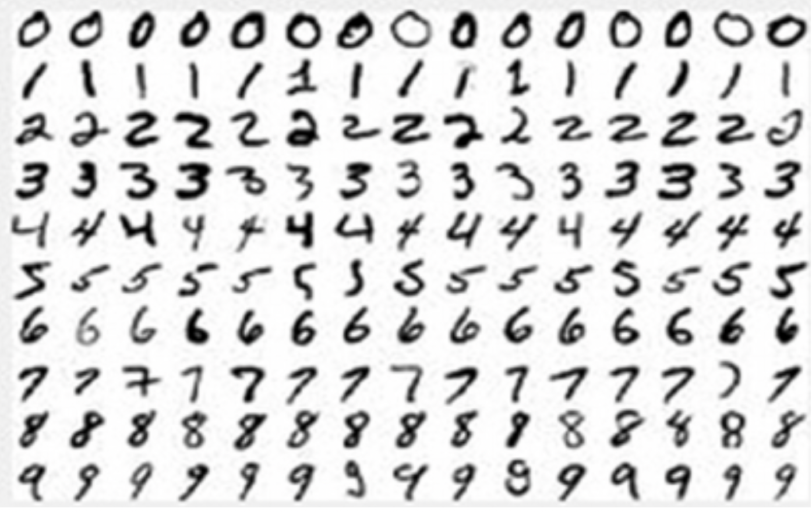
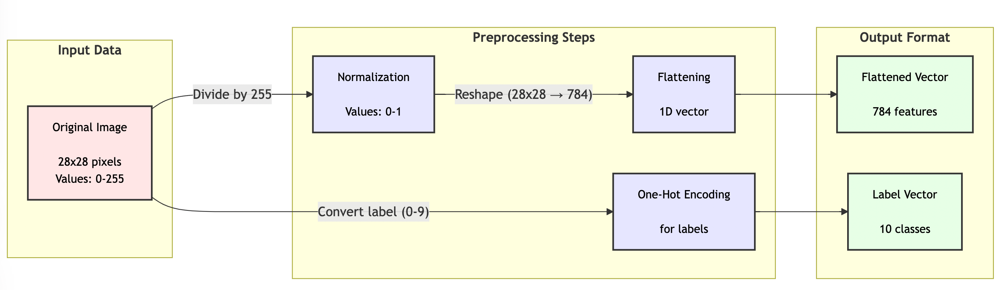
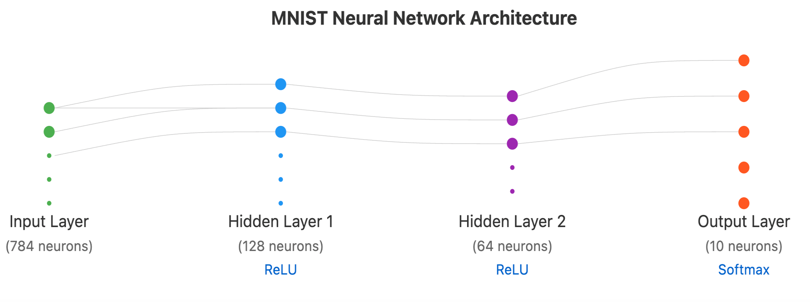

MINST
The MNIST (Modified National Institute of Standards and Technology) dataset is the widely-used dataset of handwritten digits that serves as a standard benchmark for building and testing machine learning models, particularly deep learning models. It contains 60,000 training images and 10,000 testing images of handwritten digits from 0-9, with each image being 28x28 pixels in grayscale.
The MNIST dataset is often used as a "Hello World" project for getting started with deep learning and neural networks.
Here's a detailed walkthrough of building a deep learning model using the MNIST dataset:
Project Title: MNIST Handwritten Digit Classification
Time Required: 2-3 hours
Difficulty Level: Beginner-Intermediate
Introduction
The MNIST project is a fundamental introduction to deep learning where we build a neural network to recognize handwritten digits. This project demonstrates core concepts like data preprocessing, model architecture, training, and evaluation.
 Sample of MNIST images of grayscale digits (0-9)
Prerequisites
- Python 3.x
- TensorFlow or PyTorch
- NumPy
- Matplotlib
- Basic understanding of neural networks
Steps
Step 1: Data Loading and Exploration
- Create a conda environment called "mnist" and activate it
- Import the MNIST dataset through your chosen deep learning framework
- The dataset contains:
- 60,000 training images (28x28 pixels each)
- 10,000 testing images
- Labels from 0-9 for each image
1 2 3 4 5 6 | |
 Bar chart showing the distribution of digits in training set to demonstrate data balance
Digit Distribution Python Code
Bar chart showing the distribution of digits in training set to demonstrate data balance
Digit Distribution Python Code
Step 2: Data Preprocessing
- Normalize pixel values from [0, 255] to [0, 1]
- Reshape images from 28x28 to 784-dimensional vectors
- Convert labels to one-hot encoded format
- Split training data into training and validation sets (80-20 split)
 MNIST Data preprocessing steps, showing original image → normalized image → flattened vector Mermaid Flowchart
Step 3: Model Architecture
Build a simple neural network with:
- Input layer (784 neurons)
- Hidden layer 1 (128 neurons, ReLU activation)
- Hidden layer 2 (64 neurons, ReLU activation)
- Output layer (10 neurons, softmax activation)
 Network architecture diagram showing layers, connections, and dimensions]
Step 4: Model Training
-
Configure training parameters:
-
Loss function: Categorical crossentropy
- Optimizer: Adam
- Learning rate: 0.001
- Batch size: 32
-
Epochs: 10
-
Train the model while monitoring:
-
Training accuracy
- Validation accuracy
- Training loss
- Validation loss
[FIGURE DESCRIPTION: Two line plots showing training/validation accuracy and loss over epochs]
Step 5: Model Evaluation
- Evaluate model on test set
- Generate confusion matrix
- Calculate key metrics:
- Accuracy
- Precision
- Recall
- F1-score
[FIGURE DESCRIPTION: Confusion matrix heatmap showing prediction results across all digits]
Step 6: Making Predictions
- Select random test images
- Make predictions
- Display results with:
- Original image
- Predicted digit
- Confidence score
[FIGURE DESCRIPTION: Grid of sample predictions showing original images, predicted digits, and confidence scores]
Common Challenges and Solutions
- Overfitting
- Solution: Add dropout layers
-
Solution: Use data augmentation
-
Poor Convergence
- Solution: Adjust learning rate
-
Solution: Modify batch size
-
Low Accuracy
- Solution: Deepen network
- Solution: Increase training time
Tips for Improvement
- Experiment with different architectures:
- Convolutional Neural Networks (CNNs)
- Different numbers of layers
-
Various activation functions
-
Try data augmentation:
- Random rotations
- Slight shifts
-
Small zooms
-
Implement regularization:
- Dropout
- L1/L2 regularization
- Batch normalization
Project Extensions
- Build a web interface for real-time digit recognition
- Implement different model architectures (CNN, ResNet)
- Create a mobile app for digit recognition
- Compare performance across different frameworks
[FIGURE DESCRIPTION: Comparison chart showing accuracy vs. complexity for different model architectures]
Expected Results
- Training accuracy: >98%
- Test accuracy: >97%
- Training time: ~5 minutes on CPU
- Model size: ~5MB
This project serves as an excellent introduction to deep learning, covering essential concepts while providing a solid foundation for more complex projects. The visual nature of the problem makes it easy to understand and debug, while the relatively small dataset size allows for quick experimentation with different approaches.